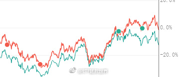

回复@linjinkel:坏了，扬声器不出声了。看了看新的max，凭什么啊就卖11000。也没多好啊。我给大家发几千红包没什么感觉，让我花一万多买个手机还是下不去手，毕竟就用一年……//@linjinkel:啥情况，不在坑里iPhone了@ETF拯救世界:多年以后，很多人才会意识到，在钻石坑里买指数基金是多么确定性赚钱的一件事……在坑里的时候能明白这个的，很少。
回复@asekiyoshi:在日本股市30年新高的时候？绝了。现在不批英国不批新兴市场，批什么日本……//@asekiyoshi:报告，日股ETF要上市了@ETF拯救世界:券商从最高点跌下来到现在跌幅70%。计划持仓部分浮亏只剩6%。除非你一辈子不涨，否则赚钱是不是钦定了。
又想起前几天在评论里喷我券商的那哥们了。真的是，最黑暗的时候，人就容易崩溃。要知道他之前还是不停给我点赞转发问答的人呢。最黑暗的时候崩溃了，来喷我了。第二天券商开始发飙，几天时间15%+了，直奔20%+。在你撑不住的时候，再坚持一下，很可能就是一个关键点了。
回复@会飞的小鸟飞在天:长期大概75%拟合度。不保证每天走势一样，也不保证中期没有幅度偏差。但已经是交易原油可以长期持有的最好品种了。//@会飞的小鸟飞在天:原油价格与油气指数有什么关系吗？@ETF拯救世界:$162411 油气什么时候接回来。 
$五粮液 sz000858$ 怎么回事。@ETF拯救世界:总有人问我为什么还不买消费。消费板块整体看确实不贵了。但是占据极大权重比例的白酒，它们的形态，看起来就让我觉得害怕。你可以说我是看图说话的渣渣。但我是真的怕，始终没法说服自己去买这样形态的品种。最关键是主流消费指数的白酒权重太太太太大了。茅台和五粮液就占30%……